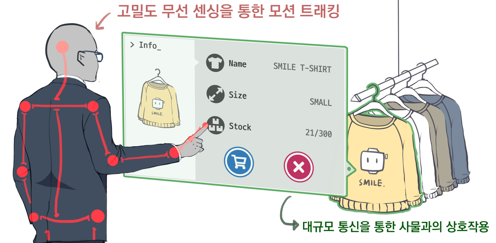

<section class="section summary-section">
    <h2 class="section-title">
      <span class="fa-stack fa-xs">
        <i class="fas fa-circle fa-stack-2x"></i>
        <i class="fas fa-palette fa-stack-1x fa-inverse"></i>
      </span>
      illustrations
    </h2>

    
    
    
    
    <div style="text-align:center">
      Drew at 2020-04-04, referenced with SAO's UI
    </div>

    <h2 class="section-title">
        <span class="fa-stack fa-xs">
          <i class="fas fa-circle fa-stack-2x"></i>
          <i class="fas fa-palette fa-stack-1x fa-inverse"></i>
        </span>
        Comics
    </h2>

    
      
</section><!--//section-->